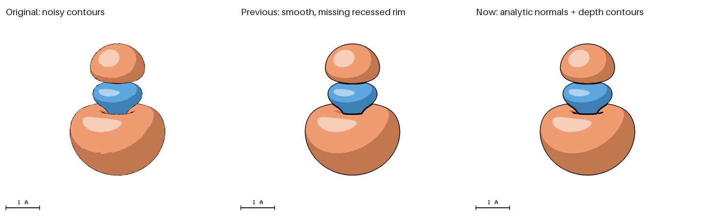

Molecular orbitals in the illustrated style
QASR reads PyTessel triangle PLY meshes alongside atomic geometry. PyQInt calculates these ten CO RHF/STO-3G orbitals; PyTessel constructs the isosurfaces; QASR draws the atoms and surfaces.

Blue and orange denote opposite phases at ±0.03 bohr−3/2. The C–O bond is 1.128 Å. Orbitals 1–7 are occupied; 7 is the HOMO and 8–9 are degenerate LUMOs. Each panel fits its own bounds; use the scale bars when comparing sizes.
Download the runnable CO example, containing meshes, recipes, final renders, galleries, scientific provenance and a generation script. From its extracted directory:
qasr orbitals/co.xyz --no-user-config --config orbitals/recipes/co-07.json -o homo.pngUnits and dimensions
PLY does not contain unit metadata. Every orbitals layer requires a file and explicit units: bohr or angstrom. One bohr equals 0.529177210903 Å. Optional origin translates the vertices in mesh units before conversion. Normals are dimensionless and are normalized without length conversion. XYZ geometry and atom/bond radii use ångströms.
{"image":{"style":"illustrated","aa":"4x"},"orbitals":[
{"file":"positive.ply","units":"bohr","color":"#4c9cdb"},
{"file":"negative.ply","units":"bohr","color":"#ed9163"}
]}File paths resolve relative to the containing recipe. ASCII and binary little-endian PLY 1.0 are accepted, with ordered float/double x/y/z and optional nx/ny/nz properties, and triangular uchar/uint (or int) index lists. Surfaces are opaque, require the Z-buffer backend, remain in world coordinates and are not repeated with the unit cell. Limits include 32 layers, 200,000 input triangles and the 64 MiB configuration budget. See the source package’s docs/molecular-orbitals.md for the complete subset.
Smooth contours that preserve recessed rims
The example uses a 121³ endpoint-exclusive sampling grid, 4× antialiasing and analytic PyQInt wavefunction-gradient normals. Geometric depth-aware contours retain folds within one phase while the smooth lighting normals keep highlight boundaries clean.

The middle and right use identical meshes, normals and camera settings. Depth-aware rendering restores the rim below the blue HOMO lobe. The smooth core control remains pixel-for-pixel unchanged. See the source package’s docs/orbital-review.md for optimization evidence and review scope.